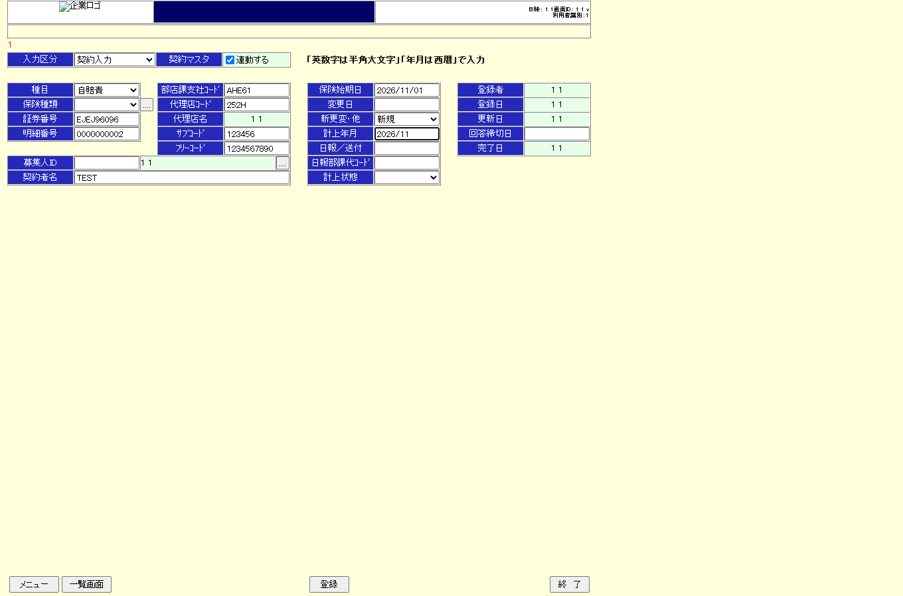
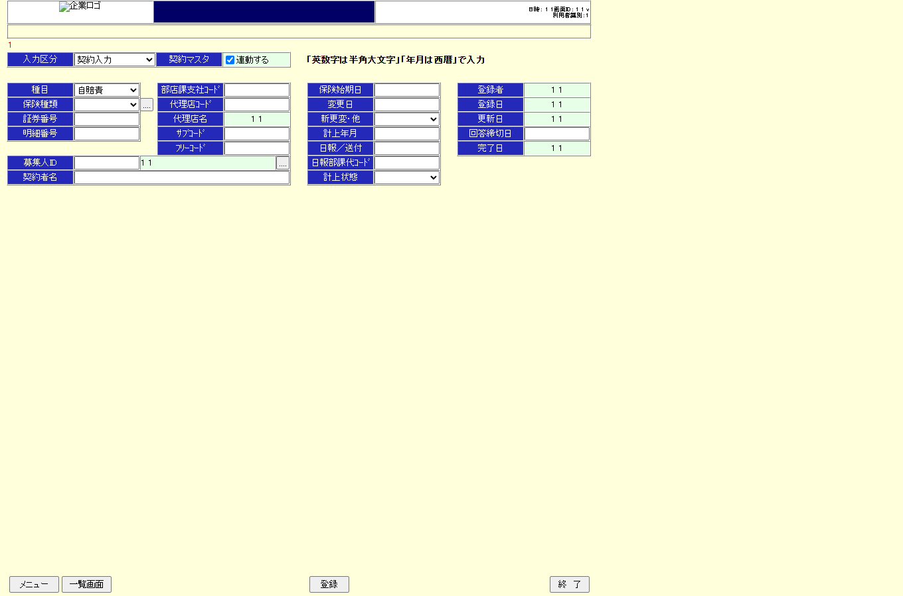
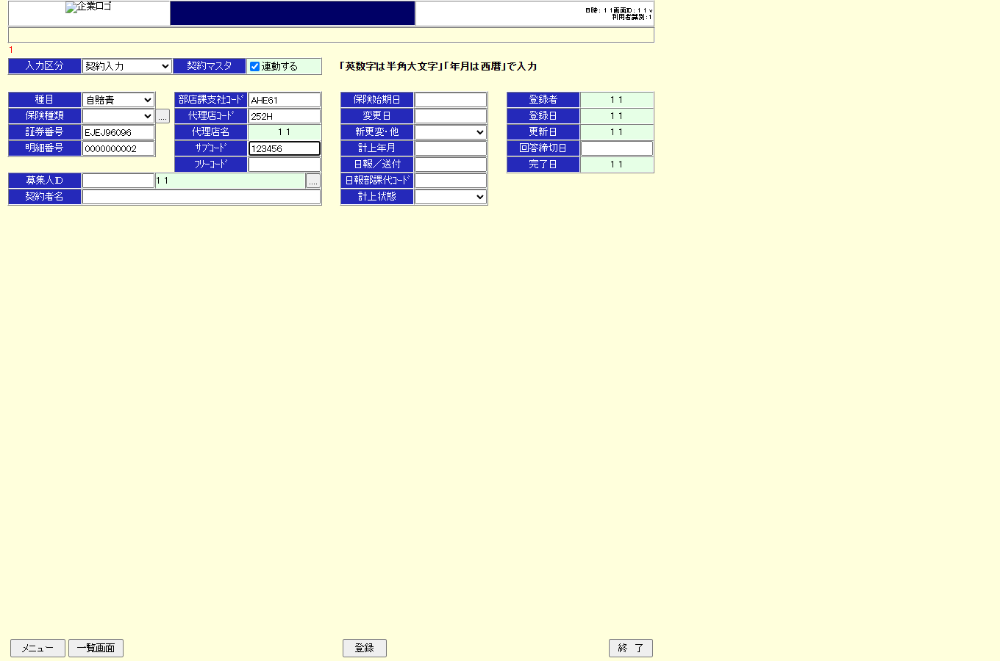

| 1 | BLK-AZ-MENU-CREATE-INPUT | goto start screen | goto | | http://127.0.0.1:10095/AMB/AMA01.html |  |
| 2 | BLK-AZ-MENU-CREATE-INPUT | click 新規登録 | click | #act001to100 | http://127.0.0.1:10095/AMB/AMA03.html |  |
| 3 | BLK-AZ-MENU-CREATE-INPUT | ast transition 不備内容入力画面-新規 | assert | #policy_number | http://127.0.0.1:10095/AMB/AMA03.html | |
| 4 | BLK-AZ-INPUT-FILL | inputBundle 各項目 | fill | select[name="input_type_list.selected"] | http://127.0.0.1:10095/AMB/AMA03.html | |
| 5 | BLK-AZ-INPUT-FILL | inputBundle 各項目 | fill | select[name="large_item_list.selected"] | http://127.0.0.1:10095/AMB/AMA03.html |  |
| 6 | BLK-AZ-INPUT-FILL | inputBundle 各項目 | fill | #policy_number | http://127.0.0.1:10095/AMB/AMA03.html | |
| 7 | BLK-AZ-INPUT-FILL | inputBundle 各項目 | fill | #sub_policy_number | http://127.0.0.1:10095/AMB/AMA03.html | |
| 8 | BLK-AZ-INPUT-FILL | inputBundle 各項目 | fill | #section_code | http://127.0.0.1:10095/AMB/AMA03.html | |
| 9 | BLK-AZ-INPUT-FILL | inputBundle 各項目 | fill | #agent_code | http://127.0.0.1:10095/AMB/AMA03.html |  |
| 10 | BLK-AZ-INPUT-FILL | inputBundle 各項目 | fill | #sub_agent_code | http://127.0.0.1:10095/AMB/AMA03.html |  |
| 11 | BLK-AZ-INPUT-FILL | inputBundle 各項目 | fill | #free_code_1 | http://127.0.0.1:10095/AMB/AMA03.html | |
| 12 | BLK-AZ-INPUT-FILL | inputBundle 各項目 | fill | #insurant_name | http://127.0.0.1:10095/AMB/AMA03.html | |
| 13 | BLK-AZ-INPUT-FILL | inputBundle 各項目 | fill | #start_date | http://127.0.0.1:10095/AMB/AMA03.html |  |
| 14 | BLK-AZ-INPUT-FILL | inputBundle 各項目 | fill | select[name="application_form_type_list.selected"] | http://127.0.0.1:10095/AMB/AMA03.html | |
| 15 | BLK-AZ-INPUT-FILL | inputBundle 各項目 | fill | #sumup_year_month | http://127.0.0.1:10095/AMB/AMA03.html |  |
| 16 | BLK-AZ-INPUT-FILL | inputBundle 各項目 | fill | #daily_report_send | http://127.0.0.1:10095/AMB/AMA03.html |  |
| 17 | BLK-AZ-INPUT-FILL | inputBundle 各項目 | fill | #sumup_section_code | http://127.0.0.1:10095/AMB/AMA03.html | |
| 18 | BLK-AZ-INPUT-FILL | inputBundle 各項目 | fill | select[name="sumup_status_list.selected"] | http://127.0.0.1:10095/AMB/AMA03.html |  |
| 19 | BLK-AZ-INPUT-FILL | inputBundle 各項目 | fill | #reminder_date | http://127.0.0.1:10095/AMB/AMA03.html |  |
| 20 | BLK-AZ-INPUT-FILL | ast bundle 表示 | assert | #selected_input_type_code | http://127.0.0.1:10095/AMB/AMA03.html | |
| 21 | BLK-SHR-CD763243 | goto start screen | goto | | http://127.0.0.1:10095/AMB/AMA03.html |  |
| 22 | BLK-SHR-CD763243 | click 登録 | click | #regist | http://127.0.0.1:10095/AMB/AMA04.html |  |
| 23 | BLK-SHR-CD763243 | ast エラーメッセージ | assert | #message_area | http://127.0.0.1:10095/AMB/AMA04.html |  |
| 24 | BLK-SHR-CD763243 | ast 申込書テーブル・APログ | assert | input[name='policy_number'] | http://127.0.0.1:10095/AMB/AMA04.html |  |
| 25 | BLK-AZ-MENU-CREATE-INPUT | goto start screen | goto | | http://127.0.0.1:10095/AMB/AMA01.html |  |
| 26 | BLK-AZ-MENU-CREATE-INPUT | click 新規登録 | click | #act001to100 | http://127.0.0.1:10095/AMB/AMA03.html |  |
| 27 | BLK-AZ-MENU-CREATE-INPUT | ast transition 不備内容入力画面-新規 | assert | #policy_number | http://127.0.0.1:10095/AMB/AMA03.html |  |
| 28 | BLK-AZ-INPUT-FILL | inputBundle 各項目 | fill | select[name="input_type_list.selected"] | http://127.0.0.1:10095/AMB/AMA03.html |  |
| 29 | BLK-AZ-INPUT-FILL | inputBundle 各項目 | fill | select[name="large_item_list.selected"] | http://127.0.0.1:10095/AMB/AMA03.html |  |
| 30 | BLK-AZ-INPUT-FILL | inputBundle 各項目 | fill | #policy_number | http://127.0.0.1:10095/AMB/AMA03.html |  |
| 31 | BLK-AZ-INPUT-FILL | inputBundle 各項目 | fill | #sub_policy_number | http://127.0.0.1:10095/AMB/AMA03.html |  |
| 32 | BLK-AZ-INPUT-FILL | inputBundle 各項目 | fill | #section_code | http://127.0.0.1:10095/AMB/AMA03.html |  |
| 33 | BLK-AZ-INPUT-FILL | inputBundle 各項目 | fill | #agent_code | http://127.0.0.1:10095/AMB/AMA03.html | |
| 34 | BLK-AZ-INPUT-FILL | inputBundle 各項目 | fill | #sub_agent_code | http://127.0.0.1:10095/AMB/AMA03.html |  |
| 35 | BLK-AZ-INPUT-FILL | inputBundle 各項目 | fill | #free_code_1 | http://127.0.0.1:10095/AMB/AMA03.html |  |
| 36 | BLK-AZ-INPUT-FILL | inputBundle 各項目 | fill | #insurant_name | http://127.0.0.1:10095/AMB/AMA03.html |  |
| 37 | BLK-AZ-INPUT-FILL | inputBundle 各項目 | fill | #start_date | http://127.0.0.1:10095/AMB/AMA03.html | |
| 38 | BLK-AZ-INPUT-FILL | inputBundle 各項目 | fill | select[name="application_form_type_list.selected"] | http://127.0.0.1:10095/AMB/AMA03.html |  |
| 39 | BLK-AZ-INPUT-FILL | inputBundle 各項目 | fill | #sumup_year_month | http://127.0.0.1:10095/AMB/AMA03.html |  |
| 40 | BLK-AZ-INPUT-FILL | inputBundle 各項目 | fill | #daily_report_send | http://127.0.0.1:10095/AMB/AMA03.html | |
| 41 | BLK-AZ-INPUT-FILL | inputBundle 各項目 | fill | #sumup_section_code | http://127.0.0.1:10095/AMB/AMA03.html |  |
| 42 | BLK-AZ-INPUT-FILL | inputBundle 各項目 | fill | select[name="sumup_status_list.selected"] | http://127.0.0.1:10095/AMB/AMA03.html | |
| 43 | BLK-AZ-INPUT-FILL | inputBundle 各項目 | fill | #reminder_date | http://127.0.0.1:10095/AMB/AMA03.html |  |
| 44 | BLK-AZ-INPUT-FILL | ast bundle 表示 | assert | #selected_input_type_code | http://127.0.0.1:10095/AMB/AMA03.html |  |
| 45 | BLK-AZ-REGISTER-UPDATE | click 登録 | click | #regist | http://127.0.0.1:10095/AMB/AMA04.html |  |
| 46 | BLK-AZ-REGISTER-UPDATE | ast 遷移 不備内容入力画面-更新 | assert | input[name="update"] | http://127.0.0.1:10095/AMB/AMA04.html |  |
| 47 | BLK-SHR-340D4343 | goto start screen | goto | | http://127.0.0.1:10095/AMB/AMA03.html |  |
| 48 | BLK-SHR-340D4343 | ast 申込書テーブル | assert | #regist | http://127.0.0.1:10095/AMB/AMA03.html |  |